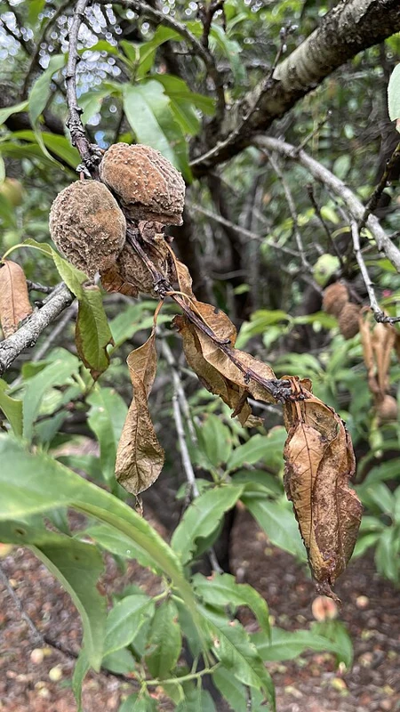

桃子褐斑上冒出黄褐色绒垫
成熟中的桃子可从小伤口附近变软，继而长出许多浅褐色小绒垫；贴着它的邻果也值得检查。

观察特征
检查正在成熟且相互接触或有碰伤的桃子。褐腐可先表现为一块变软的褐斑，再扩大到大半个果实。
辨别线索
近看斑面有无许多浅褐或灰色小绒垫，再找枝上是否还挂着干僵果、枯花。这些线索同时出现，比单个碰伤更有意义。
处理方法
清走树上、地面的腐果和僵果。采摘健康果时轻拿轻放，将受伤果分开，并逐一检查原来紧贴病果的桃子。
后续复查
下次开花时寻找成簇褐变的花，并标记相应枝条。若连续损失较多，可咨询当地果树人员，针对当地气候确定花期和采前的防护时机。
从接触点查相邻果
摘病桃前看清哪一面贴着邻果。先查邻果的对应位置，再转动检查其他损伤。冬季落叶后，枝上残留的干僵果更显眼，也应顺手清走。
整理准备食用的一筐桃子时，丢弃可见发霉的整颗桃子，以及与它直接接触的桃子。霉可能已深入柔软的果肉。检查其余果实有无腐烂，食用前洗净完好的桃子。